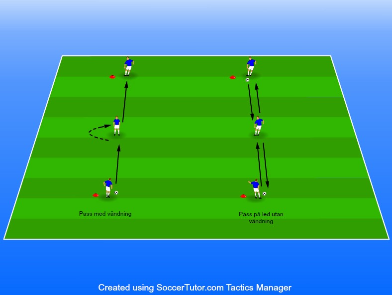

mot & medtag, passningar samt vändningar
Ålder 9 år
3 spelare
1-2 bollar
2 koner 1. Ställ 3 spelare på ett led med 5–7 meter
Första varianten på övningen är att båda spelarna som inte är i mitten har boll.
Spelaren i mitten möter och passar varannan spelare ute på kanten. Det innebär att det är jobbigt i mitten då man får jobba åt båda hållen. I detta moment så är det bara passning och mottagning som är kravet. Det går att variera med vänster/höger fot, direktpass samt hur många touch spelaren i mitten får ta.
Viktigt här är att som ledare betona vikten av timing samt avstånd på passningarna. Vi vill att spelarna i mitten ska jobba ungefär 60 sekunder och därmed ska vi inte vara rädda att sätta krav på att de ska möta ordentligt. 60 sekunder per moment per spelare innebär att det är ungefär 3 minuter per moment sen byter man fot eller till direkt pass eller till färre/fler touch.
Hur möter man då ordentligt? Jo detta gör vi genom att låtsas att vi har en spelare i ryggen hela tiden.
Den andra varianten involverar vändningar och här använder vi 1 boll per 3 spelare istället.
En spelare passar till kamraten i mitten som tar emot, vänder och passar till den tredje spelaren. Denne tar emot och passar tillbaka till mittspelaren och så vidare. Byt uppgifter efter 60 sekunder även här och testa på flera olika vändningar. Vänd med insidan, utsidan, sulan, insidan bakom stödjebenet osv.